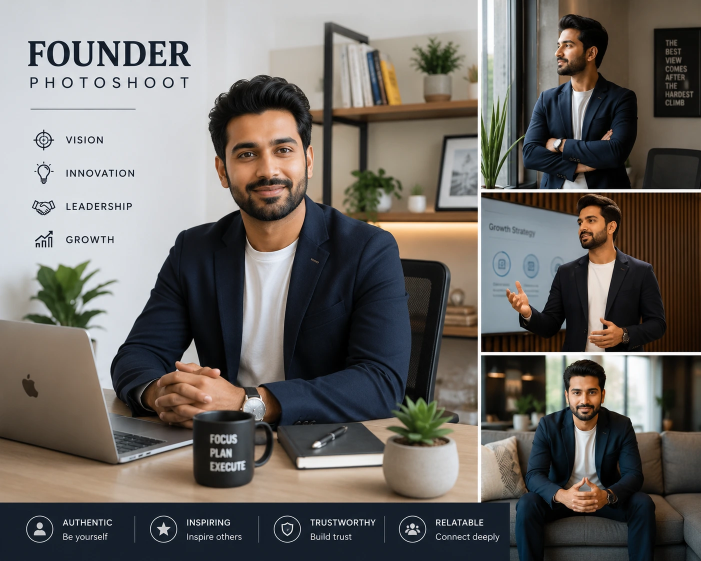
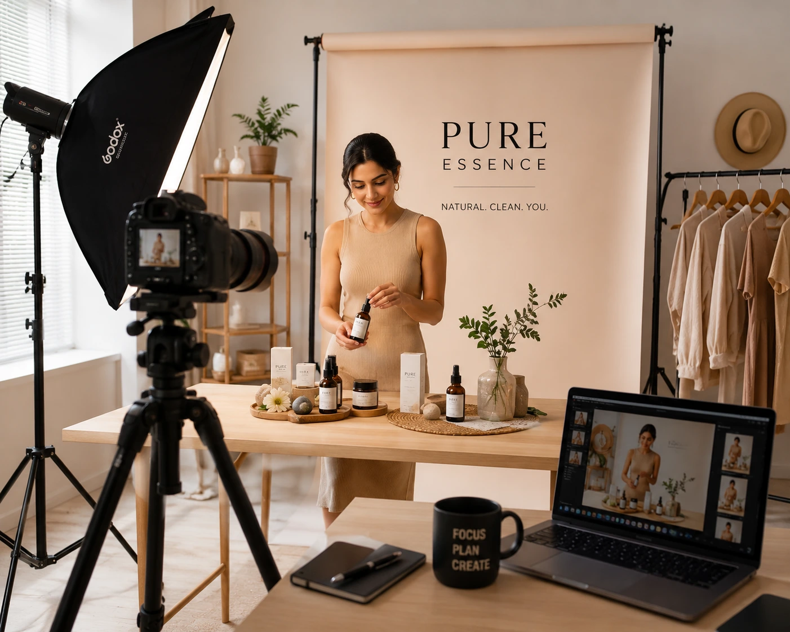

Why Professional Brand Photography is the Secret to 5X More Sales for Indian Startups
Introduction
India's startup ecosystem is one of the fastest-growing in the world. From D2C skincare brands in Mumbai to tech consultancies in Bengaluru, thousands of founders are building businesses from the ground up. But here's the uncomfortable truth most founders discover too late: your product can be excellent, your service can be outstanding — and you can still lose customers to a competitor whose brand simply looks better.
Professional brand photography is not a cosmetic upgrade. It is a revenue driver. For Indian startups competing in crowded digital markets, the question is no longer whether to invest in brand promotion photography — it is how quickly you can make it a priority.
Why Indian Startups Struggle with Brand Image
Most Indian founders bootstrap hard in the early stages — the website is a template, product photos are shot on a smartphone, and the founder's LinkedIn photo is from a family event. None of this is shameful. But it creates a specific problem: the brand's visual language communicates "early stage and scrappy" at exactly the moment it needs to say "trustworthy and professional."
When a potential customer lands on your website, their brain makes a judgment about your brand in under three seconds. That judgment is overwhelmingly visual. It is not based on your pricing or testimonials — the visual impression comes first, and it sets the context for everything else.

What Professional Brand Photography Actually Delivers
Visual Storytelling
Professional photography translates your brand story into images — communicating personality and positioning before a single word is read.
High-Conversion Visuals
Professional imagery consistently outperforms smartphone content on add-to-cart rates, form submissions, and trust signals.
Channel Consistency
One shoot produces assets for your website, LinkedIn, Instagram, pitch decks, and ads — all with matching visual identity.
Authority Positioning
Visual professionalism is now a primary trust signal. Professional photography tells every visitor: "We invest in excellence."
Personal Branding Photoshoot for LinkedIn and Websites
For founders, consultants, and business owners, personal brand photography delivers some of the highest ROI available. Your LinkedIn profile photo is often the first visual impression a professional contact, potential client, or investor receives of you. The difference between a casual selfie and a professionally shot personal branding image is the difference between being perceived as a freelancer and being perceived as a serious professional.
A full personal branding photoshoot produces a range of images: the founder at work, in conversation, detail shots of their environment, and portraits at varying levels of formality. This image library supports a year of content — LinkedIn articles, Instagram posts, website about pages, speaking bios, and media features.
What makes a personal branding photoshoot effective is the creative direction behind it. A photoshoot for a tech founder should feel different from one for a luxury interior designer, which should feel different from one for an executive coach. Location, wardrobe, lighting style, and composition are all intentional choices that reinforce brand positioning.
How to Improve Brand Image with Photography: A Strategic Framework
- Define your brand personality first. Identify three to five adjectives — bold and disruptive, warm and approachable, premium and minimal — that guide every creative decision: location, styling, lighting, and colour palette.
- Shoot for every channel. Plan outputs during pre-production: landscape for the website hero, square for Instagram, vertical for Stories, headshots for LinkedIn, team portraits for the about page.
- Invest in art direction, not just photography. Styling, props, location choices, and set design shape the visual story. A creative agency for startups with production experience handles this as part of the brief.
- Plan for longevity. A well-executed brand shoot provides 12 to 18 months of content. Budget for an annual refresh and a mid-year content day for seasonal or campaign-specific images.
- Match image quality to pricing. If your product is positioned at a premium level but your photography communicates budget quality, there is a cognitive mismatch that makes customers hesitant to pay your actual price.

Business Branding: The Compounding Effect of Visual Investment
Business branding through photography is not a cost — it is an investment with compounding returns. When a startup launches with professional brand imagery from day one, every channel benefits simultaneously: the website converts at a higher rate, the LinkedIn company page attracts better-quality enquiries, Instagram content earns stronger algorithmic reach, and pitch decks make stronger impressions on investors.
Website & Landing Pages
- Higher conversion on hero sections
- Stronger trust signals on about pages
- Lower bounce rates with quality imagery
Social Media
- Higher organic reach on Instagram and LinkedIn
- Stronger personal brand presence
- Consistent visual identity across platforms
Sales & Investor Decks
- Professional founder and team portraits
- Brand credibility before the first meeting
- Visual alignment with your pricing level
Choosing the Right Creative Agency for Startups
Not all photography teams are equipped to deliver brand photography that drives business results. Evaluate these five factors before choosing a production partner:
- Portfolio diversity. Look for experience across product, lifestyle, and personal branding photography — with range that does not sacrifice visual consistency.
- Creative brief process. A professional team asks about your audience, positioning, and distribution channels before proposing a creative concept.
- Post-production quality. Colour grading, retouching, and platform-formatted file delivery are part of the job — not extras.
- Indian market knowledge. The visual references, cultural context, and aesthetic preferences of the Indian consumer should inform the creative brief from the outset.
- Full-service capability. Pre-production planning, art direction, on-set direction, and post-production in one pipeline delivers better results and a smoother process.
Conclusion
In India's increasingly competitive startup market, professional brand photography is one of the highest-leverage investments a founder can make. The brands that win on social media, convert website visitors, close enterprise clients, and attract serious investors all share one thing: they look the part.
High-conversion marketing visuals, a compelling personal branding photoshoot for LinkedIn and websites, and a consistent visual identity built through professional business photoshoots are not aesthetic choices — they are revenue decisions.
At The PhD Ads, we are the creative agency for startups and established brands that understand visual storytelling for brand growth. From personal branding photoshoots to full-scale commercial brand photography, we build the visual identity that makes your business impossible to ignore.
Key Topics
Ready to Build a Brand That Wins on Sight?
At The PhD Ads, we specialise in professional brand photography, personal branding photoshoots, and commercial visual storytelling for Indian startups and growing businesses.
Email: team@e2o.in